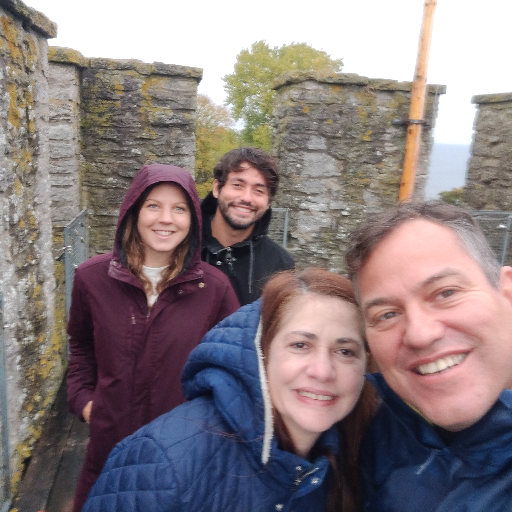

Setembro/2023
Ilha Visby na Suecia

Zaqueu, Silmara, Bruno e Evelina visitando Visby. Na Suécia atual, Visby é uma cidade de 22 593 habitantes (2011), famosa pelas suas mais de 200 casas de pedra medievais, e sobretudo
pelas suas muralhas, praticamente intactas, de 3,4 km que cercam a
cidade antiga. As Muralhas de Visby são chamadas de Ringmuren, que
poderia ser traduzido como "muro em anel".